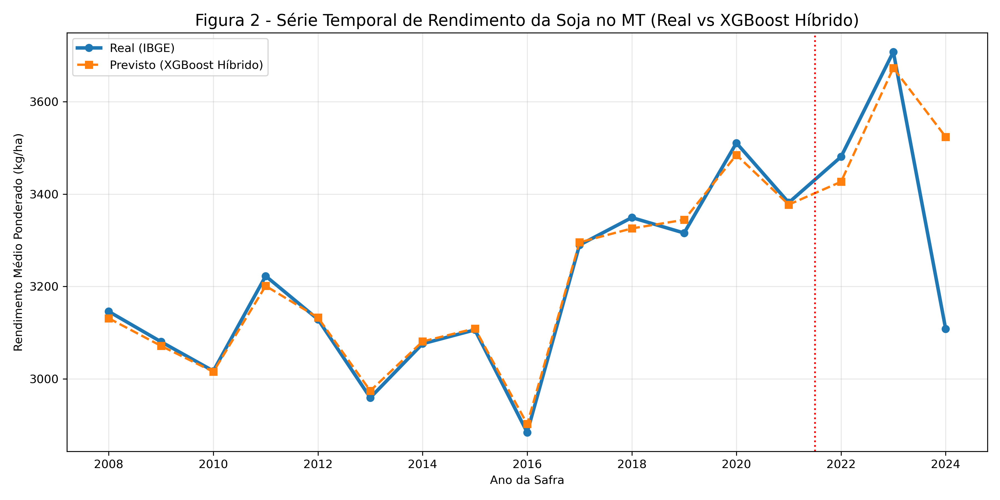
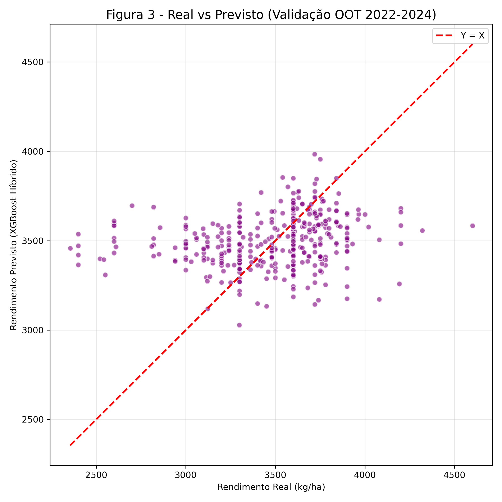
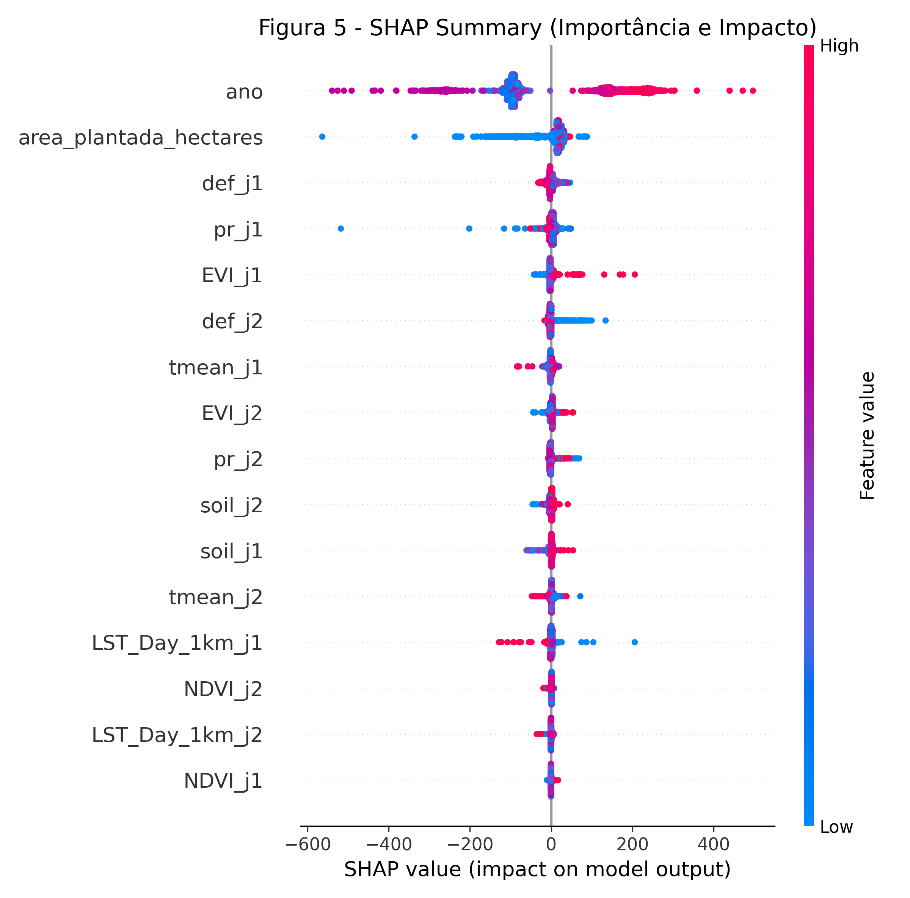
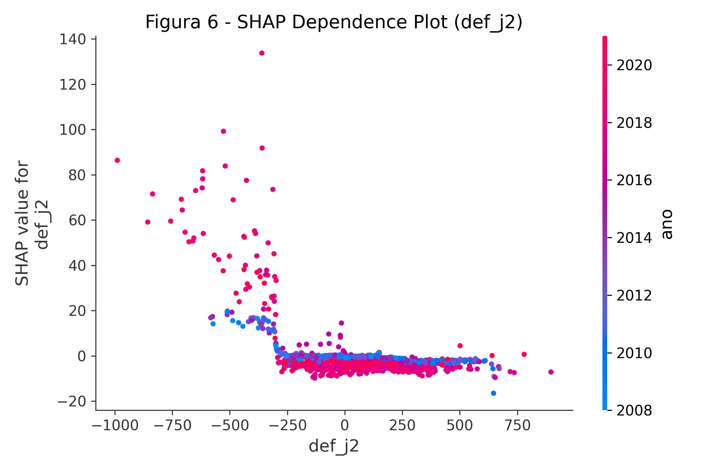

Weslley Schunemann
Orientador: Walter Mesquita Filho
MBA em Data Science e Analytics – 2026
Pressione a SETA PARA A DIREITA para avançar
Modelos tradicionais de estimativa possuem limitações:
Desenvolver e validar um modelo preditivo baseado em Machine Learning capaz de estimar o rendimento municipal da soja no MT.
A inovação proposta: Integrar séries multiespectrais e climáticas organizadas em Janelas Fenológicas (J1 e J2) utilizando a nuvem (Google Earth Engine).
Dividimos o ciclo da soja para o modelo entender as fases críticas:
Crescimento Vegetativo
Variáveis: NDVI, EVI, Temperatura, Precipitação, Déficit Hídrico, Umidade Solo
Floração e Enchimento de Grãos
Variáveis: NDVI, EVI, Temperatura, Precipitação, Déficit Hídrico, Umidade Solo
Os modelos de árvore (como Random Forest ou XGBoost) são incapazes de extrapolar a tendência secular tecnológica de alta produtividade ao longo dos anos.
A Solução Adotada (Detrending):
O modelo Híbrido com XGBoost foi o grande campeão.
| Modelo | R² | RMSE (kg/ha) | MAE (kg/ha) | WMAPE (%) |
|---|---|---|---|---|
| Regressão Linear Múltipla | 0,0531 | 337,19 | 258,43 | 7,44 |
| Híbrido: XGBoost | 0,0286 | 341,52 | 251,46 | 7,24% |
Erro WMAPE estabilizado em 5,27% na validação espacial (Leave-Municipality-Out).

O modelo híbrido acompanhou o crescimento da produtividade superando a quebra de 2024.

Forte aderência na linha de perfeição (Y=X).

O ano (tecnologia) eleva o rendimento. O déficit hídrico e temperatura na J2 destroem a safra.

O modelo aprendeu de forma autônoma que a falta de água no enchimento de grãos penaliza o rendimento severamente.
Weslley Schunemann
Contato: aluno@email.com